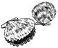

Scalloping by sail is a beneficial and workable alternative?dragging back and forth with wind a beam or keeping the wind on your quarter. Remember, though that sailboats and powerboats maneuver differently, and that you are encroaching on the professional's domain.